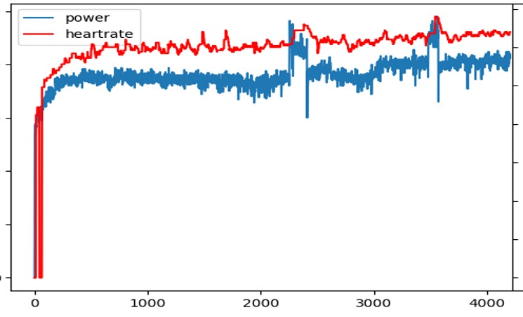
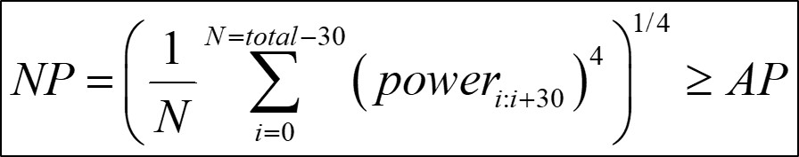
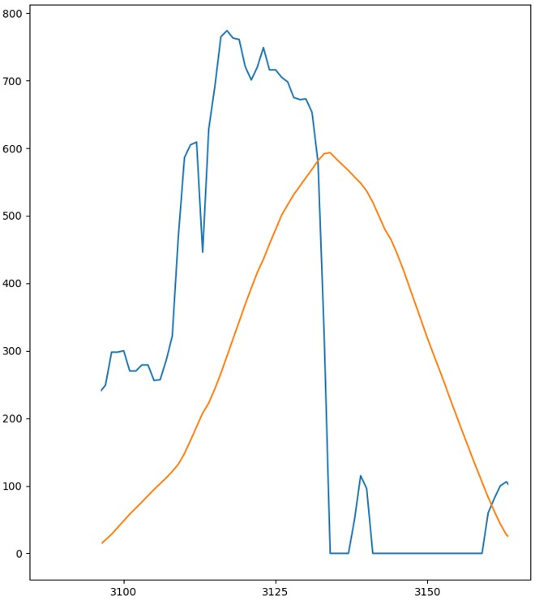
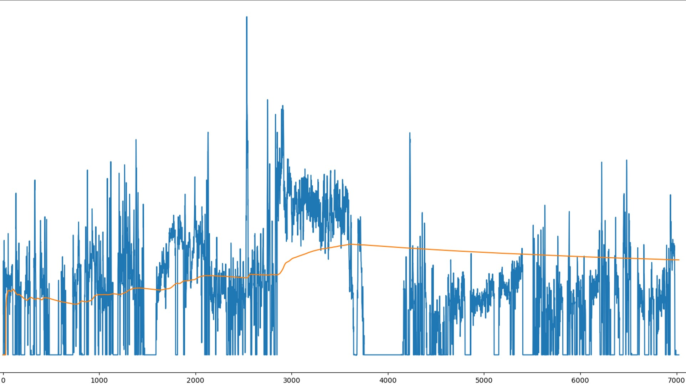

標準化功率的數學及其意義
在做訓練時我們會預期這次訓練的量，而訓練的量即為此次運動的強度乘上時間。強度在自行車的世界有功率的話都以 功率為優先 ，並會以其他數據為輔。然而強度則會根據每個人能力不同制定客製化訓練，所以會採用 相對標準 。而自行車在騎乘時功率變化很大，所以會採用 加權平均 的方式會比算術平均還更能反映真實期程情況，但是平均功率也是能看到如做功資訊，在騎乘時對於補給策略來說很重要。
自行車功率訓練自從 SRM 開發了第一個移動式功率計後，現在要練車的人幾乎都備有功率計，最重要的就是在騎乘完後的數據分析。現在也有許多的軟體會自動幫你計算，但若是剛開始入門會覺得眼花撩亂，如這圖一所示，這邊就先從標準化功率介紹。
 |
|---|
| 圖一：使用功率計後軟體會多出 NP, IF, VI, TSS, WORK 等資訊 |
一次訓練週期中課程不會只有一種，在這邊就拿兩種不一樣的課程來看，一個是接近 HIIT 如圖二，另一個則是穩定騎乘如圖三，有騎過這兩種課程的人都知道，若這兩次騎乘的平均瓦數與時間相同，一定是左圖的課程比較累，所以在訓練量的計算上若是使用平均功率，就不能反應這種情況。
 |
|---|
| 圖二：IIT 課程 |
|  |
|---|
| 圖三：穩定騎乘課程 |
為了反應這種情況，Coggan博士設計了另外一種計算方式，並將其命名為Normalized power，這邊我就翻成標準化功率，計算步驟如下：
- 計算30秒的移動平均值，例如第1~30秒算出一個值100，第2~31秒算出一個值101……以此類推
- 將第一步驟算出來的每個數值四次方，例如1~30秒算出的值為100，那就將100乘四次
- 把每個平均值四次方後取算術平均
- 最後開四次方跟即為所求
上面看起來好像很複雜，其實用數學符號化簡就只有一條式子如圖四。這種平均在數學上有名字，叫做冪平均，而我們想要的結果就是冪平均要大於算術平均，在數學上也剛好有冪平均不等式的結果，符合我們的期待，所以一次運動中，標準化功率的數值必定是大於等於平均功率。
|  |
|---|
| 圖四：標準化功率的計算方式及與平均功率的關係 |
但是若有使用碼表計圈功能就會發現，在某些情況下標準化功率會小於平均功率。像圖五即為我的某次騎乘，其中有兩段小於30秒的計圈，就會發現這兩次計圈是小於平均功率的。但是計算平均功率又需要至少30秒的功率，那這是怎麼算的呢？前一頁提到計算標準化功率的第一步是先算30秒的平均功率，所以會將計圈前30秒的功率算進去，如果前30秒功率很低，那就會拉低標準化功率的值，也因為要先計算那30秒的平均，所以整體的反應會落後於瞬間功率。
 |
|---|
| 圖五：計圈的標準化功率與平均功率 |
|  |
|---|
| 圖六：計圈的瞬時功率與和前 30 秒的平均功率 |
而在實際騎乘時可能會因為衝刺或休息，造成瞬時功率突然有一個峰值或是0，我們可以來看一下當下的標準化功率會如何變化。如果只有短時間的衝刺或停腳，因為標準化功率會先算30秒平均，所以反而會將這些離群值拉得更靠近平均，也就是會先過濾一次這種突然出現的峰值，並非捨棄不算。
|  |
|---|
| 圖七：一次騎乘時的瞬時功率與標準化功率 |
所以通常在儀器上，這個時都需要超過30秒才會顯示，而且對於一次運動而言，標準化功率 ≥ 平均功率，但若一次運動中有分段計算則不一定，所以在短間歇會有落後於瞬間功率的情況，所以在短間歇就不用太在意標準化功率。也因為做了30秒的平均，有一些離群值會被平均掉，但並不代表這些離群值不會做計算，還是會造成標準化功率提升或下降。